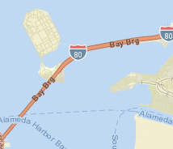

Spatial CrowdSourcing
个人资料
联系我们
联系信箱
安全退出
空间众包地图
空间服务查询
空间信息查询
空间众包图层查询
空间众包工人查询
选取区域众包工人
基于格网查询工人
基于用户ID查询工人
空间分析功能
空间众包路径分析
空间缓冲区分析
空间区域分析
添加GIS图形层
空间任务整合
空间任务完成
空间任务管理
众包系统管理
用户登录
用户注册
页面
联系人
团队管理
客户管理
常见问题
搜索结果
论坛
404页面
500页面
空白页
空间任务评价
46小时前
空气质量采集
3天前 2014.11.8
25小时前
城市交通情况
昨天
查看所有
空间任务分配
5个基于工作者专业度
4分钟前
3个基于空间位置
12分钟前
查看所有
发布
主题
首页
关闭操作
定位当前选项卡
关闭全部选项卡
关闭其他选项卡
退出